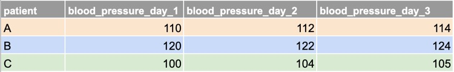
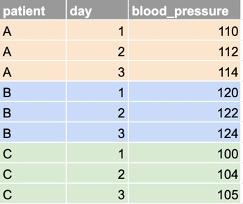
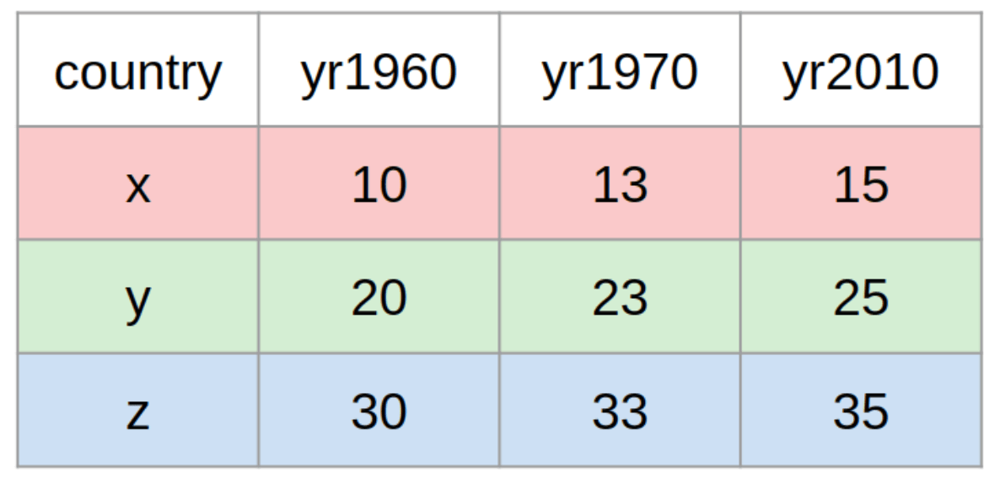
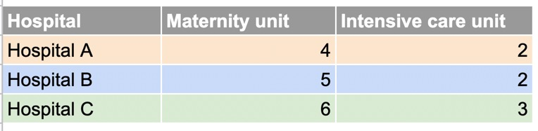
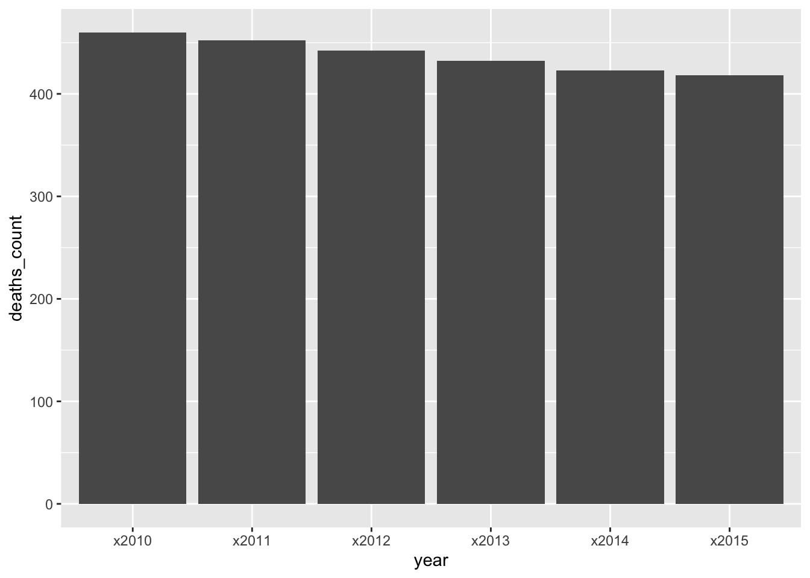
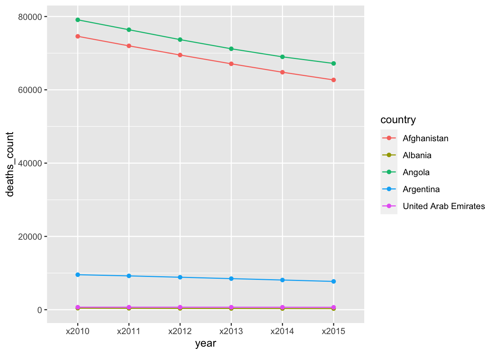

## Load packages
if(!require(pacman)) install.packages("pacman")
pacman::p_load(tidyverse, outbreaks, janitor, rio, here, knitr)15 Pivoting data
15.1 Intro
Pivoting or reshaping is a data manipulation technique that involves re-orienting the rows and columns of a dataset. This is sometimes required to make data easier to analyze, or to make data easier to understand.
In this lesson, we will cover how to effectively pivot data using pivot_longer() and pivot_wider() from the tidyr package.
15.2 Learning Objectives
You will understand what wide data format is, and what long data format is.
You will know how to pivot long data to wide data using
pivot_long()You will know how to pivot wide data to long data using
pivot_wider()You will understand why the long data format is easier for plotting and wrangling in R.
15.3 Packages
15.4 What do wide and long mean?
The terms wide and long are best understood in the context of example datasets. Let’s take a look at some now.
Imagine that you have three patients from whom you collect blood pressure data on three days.
You can record the data in a wide format like this:

Or you could record the data in a long format as so :

Take a minute to study the two datasets to make sure you understand the relationship between them.
In the wide dataset, each observational unit (each patient) occupies only one row. And each measurement. (blood pressure day 1, blood pressure day 2…) is in a separate column.
In the long dataset, on the other hand, each observational unit (each patient) occupies multiple rows, with one row for each measurement.
Here is another example with mock data, in which the observational units are countries:


The examples above are both time-series datasets, because the measurements are repeated across time (day 1, day 2 and so on). But the concepts of long and wide are relevant to other kinds of data too, not just time series data.
Consider the example below, showing the number of patients in different units of three hospitals:


In the wide dataset, again, each observational unit (each hospital) occupies only one row, with the repeated measurements for that unit (number of patients in different rooms) spread across two columns.
In the long dataset, each observational unit is spread over multiple lines.
Vocab
The “observational units”, sometimes called “statistical units” of a dataset are the primary entities or items described by the columns in that dataset.
In the first example, the observational/statistical units were patients; in the second example, countries, and in the third example, hospitals.
Practice
Consider the mock dataset created below:
temperatures <-
data.frame(
country = c("Sweden", "Denmark", "Norway"),
avgtemp.1994 = 1:3,
avgtemp.1995 = 3:5,
avgtemp.1996 = 5:7)
temperatures country avgtemp.1994 avgtemp.1995 avgtemp.1996
1 Sweden 1 3 5
2 Denmark 2 4 6
3 Norway 3 5 7Is this data in a wide or long format?
## Enter the string "wide" or the string "long"
## Assign your answer to the object Q_data_type
Q_data_type <- "_____"
## Then run the provided CHECK function15.5 When should you use wide vs long data?
The truth is: it really depends on what you want to do! The wide format is great for displaying data because it’s easy to visually compare values this way. Long data is best for some data analysis tasks, like grouping and plotting.
It will therefore be essential for you to know how to switch from one format to the other easily. Switching from the wide to the long format, or the other way around, is called pivoting.
15.6 Pivoting wide to long
To practice pivoting from a wide to a long format, we’ll consider data from Gapminder on the number of infant deaths in specific countries over several years.
Side Note
Gapminder is a good source of rich, health-relevant datasets. You are encouraged to peruse their collections.
Below, we read in and view this data on infant deaths:
infant_deaths_wide <- read_csv(here("data/gapminder_infant_deaths.csv"))
infant_deaths_wide# A tibble: 5 × 7
country x2010 x2011 x2012 x2013 x2014 x2015
<chr> <dbl> <dbl> <dbl> <dbl> <dbl> <dbl>
1 Afghanistan 74600 72000 69500 67100 64800 62700
2 Angola 79100 76400 73700 71200 69000 67200
3 Albania 420 384 354 331 313 301
4 United Arab Emirates 683 687 686 681 672 658
5 Argentina 9550 9230 8860 8480 8100 7720We observe that each observational unit (each country) occupies only one row, with the repeated measurements spread out across multiple columns. Hence this dataset is in a wide format.
To convert to a long format, we can use a convenient function pivot_longer. Within pivot_longer we define, using the cols argument, which columns we want to pivot:
infant_deaths_wide %>%
pivot_longer(cols = x2010:x2015)# A tibble: 5 × 3
country name value
<chr> <chr> <dbl>
1 Afghanistan x2010 74600
2 Afghanistan x2011 72000
3 Afghanistan x2012 69500
4 Afghanistan x2013 67100
5 Afghanistan x2014 64800Very easy!
We can observe that the resulting long format dataset has each country occupying 5 rows (one per year between 2010 and 2015). The years are indicated in the variable names, and all the death count values occupy a single variable, values.
A useful way to think about this transformation is that the infant deaths values used to be in matrix format (2 dimensions; 2D), but they are now in a vector format (1 dimension; 1D).
This long dataset will be much more handy for many data analysis procedures.
As a good data analyst, you may find the default names of the variables, names and values, to be unsatisfactory; they do not adequately describe what the variables contain. Not to worry; you can give custom column names, using the arguments names_to and values_to:
infant_deaths_wide %>%
pivot_longer(cols = x2010:x2015,
names_to = "year",
values_to = "deaths_count")# A tibble: 5 × 3
country year deaths_count
<chr> <chr> <dbl>
1 Afghanistan x2010 74600
2 Afghanistan x2011 72000
3 Afghanistan x2012 69500
4 Afghanistan x2013 67100
5 Afghanistan x2014 64800
Side Note
Notice that the long format is more informative than the original wide format. Why? Because of the informative column name “deaths_count”. In the wide format, unless the CSV is named something like count_infant_deaths, or someone tells you “these are the counts of infant deaths per country and per year”, you have no idea what the numbers in the cells represent.
You may also want to remove the x in front of each year. This can be achieved with the convenient parse_number() function from the {readr} package (part of the tidyverse), which extracts numbers from strings:
infant_deaths_wide %>%
pivot_longer(cols = x2010:x2015,
names_to = "year",
values_to = "deaths_count") %>%
mutate(year = parse_number(year))# A tibble: 5 × 3
country year deaths_count
<chr> <dbl> <dbl>
1 Afghanistan 2010 74600
2 Afghanistan 2011 72000
3 Afghanistan 2012 69500
4 Afghanistan 2013 67100
5 Afghanistan 2014 64800Great! Now we have a clean, long dataset.
For later use, let’s now store this data:
infant_deaths_long <-
infant_deaths_wide %>%
pivot_longer(cols = x2010:x2015,
names_to = "year",
values_to = "deaths_count")
Practice
For this practice question, you will use the euro_births_wide dataset from Eurostat. It shows the annual number of births in 50 European countries:
euro_births_wide <-
read_csv(here("data/euro_births_wide.csv"))
head(euro_births_wide)# A tibble: 5 × 8
country x2015 x2016 x2017 x2018 x2019 x2020 x2021
<chr> <dbl> <dbl> <dbl> <dbl> <dbl> <dbl> <dbl>
1 Belgium 122274 121896 119690 118319 117695 114350 118349
2 Bulgaria 65950 64984 63955 62197 61538 59086 58678
3 Czechia 110764 112663 114405 114036 112231 110200 111793
4 Denmark 58205 61614 61397 61476 61167 60937 63473
5 Germany 737575 792141 784901 787523 778090 773144 795492The data is in a wide format. Convert it to a long format data frame that has the following column names: “country”, “year” and “births_count”
Q_euro_births_long <-
euro_births_wide %>% # complete the code with your answer15.7 Pivoting long to wide
Now you know how to pivot from wide to long with pivot_longer(). How about going the other way, from long to wide? For this, you can use the fittingly-named pivot_wider() function.
But before we consider how to use this function to manipulate long data, let’s first consider where you’re likely to run into long data.
While wide data tends to come from external sources (as we have seen above), long data on the other hand, is likely to be created by you while data wrangling, especially in the course of group_by()-summarize() manipulations.
Let’s see an example of this now.
We will use a dataset of patient records from an Ebola outbreak in Sierra Leone in 2014. Below we extract this data from the {outbreaks} package and perform some simplifying manipulations on it.
ebola <-
outbreaks::ebola_sierraleone_2014 %>%
as_tibble() %>%
mutate(year = lubridate::year(date_of_onset)) %>% # extract the year from the date
select(patient_id = id, district, year_of_onset = year) # select and rename
ebola# A tibble: 5 × 3
patient_id district year_of_onset
<int> <fct> <dbl>
1 1 Kailahun 2014
2 2 Kailahun 2014
3 3 Kailahun 2014
4 4 Kailahun 2014
5 5 Kailahun 2014Each row corresponds to one patient, and we have each patient’s id number, their district and the year in which they contracted Ebola.
Now, consider the following grouped summary of the ebola dataset, which counts the number of patients recorded in each district in each year:
cases_per_district_per_year <-
ebola %>%
group_by(district) %>%
count(year_of_onset) %>%
ungroup()
cases_per_district_per_year# A tibble: 5 × 3
district year_of_onset n
<fct> <dbl> <int>
1 Bo 2014 397
2 Bo 2015 209
3 Bombali 2014 1070
4 Bombali 2015 120
5 Bonthe 2014 7The output of this grouped operation is a quintessentially “long” dataset! Each observational unit (each district) occupies multiple rows (two rows per district, to be exact), with one row for each measurement (each year).
So, as you now see, long data often can arrive as an output of grouped summaries, among other data manipulations.
Now, let’s see how to convert such long data into a wide format with pivot_wider().
The code is quite straightforward:
cases_per_district_per_year %>%
pivot_wider(values_from = n,
names_from = year_of_onset)# A tibble: 5 × 3
district `2014` `2015`
<fct> <int> <int>
1 Bo 397 209
2 Bombali 1070 120
3 Bonthe 7 77
4 Kailahun 535 35
5 Kambia 127 294As you can see, pivot_wider() has two important arguments: values_from and names_from. The values_from argument defines which values will become the core of the wide data format (in other words: which 1D vector will become a 2D matrix). In our case, these values were in the n variable. And names_from identifies which variable to use to define column names in the wide format. In our case, this was the year_of_onset variable.
Side Note
You might also want to have the years be your primary observational/statistical unit, with each year occupying one row. This can be carried out similarly to the above example, but the district variable will be provided as an argument to names_from, instead of year_of_onset.
cases_per_district_per_year %>%
pivot_wider(values_from = n,
names_from = district)# A tibble: 2 × 15
year_of_onset Bo Bombali Bonthe Kailahun Kambia Kenema Koinadugu Kono
<dbl> <int> <int> <int> <int> <int> <int> <int> <int>
1 2014 397 1070 7 535 127 641 142 328
2 2015 209 120 77 35 294 139 15 223
# ℹ 6 more variables: Moyamba <int>, `Port Loko` <int>, Pujehun <int>,
# Tonkolili <int>, `Western Rural` <int>, `Western Urban` <int>Here the unique observation units (our rows) are now the years (2014, 2015).
Practice
The population dataset from the tidyr package shows the populations of 219 countries over time.
Pivot this data into a wide format. Your answer should have 20 columns and 219 rows.
Q_population_widen <-
tidyr::population15.8 Why is long data better for analysis?
Above we mentioned that long data is best for a majority of data analysis tasks. Now we can justify why. In the sections below, we will go through a few common operations that you will need to do with long data, in each case you will observe that similar manipulations on wide data would be quite tricky.
15.8.1 Filtering grouped data
First, let’s talk about filtering grouped data, which is very easy to do on long data, but difficult on wide data.
Here is an example with the infant deaths dataset. Imagine that we want to answer the following question: For each country, which year had the highest number of child deaths?
This is how we would do so with the long format of the data :
infant_deaths_long %>%
group_by(country) %>%
filter(deaths_count == max(deaths_count))# A tibble: 5 × 3
# Groups: country [5]
country year deaths_count
<chr> <chr> <dbl>
1 Afghanistan x2010 74600
2 Angola x2010 79100
3 Albania x2010 420
4 United Arab Emirates x2011 687
5 Argentina x2010 9550Easy right? We can easily see, for example, that Afghanistan had its highest infant death count in 2010, and the United Arab Emirates had its highest death count in 2011.
If you wanted to do the same thing with wide data, it would be much more difficult. You could try an approach like this with rowwise():
infant_deaths_wide %>%
rowwise() %>%
mutate(max_count = max(x2010, x2011, x2012, x2013, x2014, x2015))# A tibble: 5 × 8
# Rowwise:
country x2010 x2011 x2012 x2013 x2014 x2015 max_count
<chr> <dbl> <dbl> <dbl> <dbl> <dbl> <dbl> <dbl>
1 Afghanistan 74600 72000 69500 67100 64800 62700 74600
2 Angola 79100 76400 73700 71200 69000 67200 79100
3 Albania 420 384 354 331 313 301 420
4 United Arab Emirates 683 687 686 681 672 658 687
5 Argentina 9550 9230 8860 8480 8100 7720 9550This almost works—we have, for each country, we have the maximum number of child deaths reported—but we still don’t know which year is attached to that value in max_count. We would have to take that value and index it back to its respective year column somehow… what a hassle! There are solutions to find this but all are very painful. Why make your life complicated when you can just pivot to long format and use the beauty of group_by() and filter()?
Side Note
Here we used a special {dplyr} function: rowwise(). rowwise() allows further operations to be applied per-row . It is equivalent to creating one group for each row (group_by(row_number())).
Without rowwise() you would get this :
infant_deaths_wide %>%
mutate(max_count = max(x2010, x2011, x2012, x2013, x2014, x2015))# A tibble: 5 × 8
country x2010 x2011 x2012 x2013 x2014 x2015 max_count
<chr> <dbl> <dbl> <dbl> <dbl> <dbl> <dbl> <dbl>
1 Afghanistan 74600 72000 69500 67100 64800 62700 1170000
2 Angola 79100 76400 73700 71200 69000 67200 1170000
3 Albania 420 384 354 331 313 301 1170000
4 United Arab Emirates 683 687 686 681 672 658 1170000
5 Argentina 9550 9230 8860 8480 8100 7720 1170000…the maximum count over ALL rows in the dataset.
Practice
For this practice question, you will perform a grouped filter on the long format population dataset from the tidyr package. Use group_by() and filter() to obtain a dataset that shows the maximum population recorded for each country, and the year in which that maximum population was recorded.
Q_population_max <-
population 15.8.2 Summarizing grouped data
Grouped summaries are also difficult to perform on wide data. For example, considering again the infant_deaths_long dataset, if you want to ask: For each country, what was the mean number of infant deaths and the standard deviation (variation) in deaths ?
With long data it is simple:
infant_deaths_long %>%
group_by(country) %>%
summarize(mean_deaths = mean(deaths_count),
sd_deaths = sd(deaths_count))# A tibble: 5 × 3
country mean_deaths sd_deaths
<chr> <dbl> <dbl>
1 Afghanistan 68450 4466.
2 Albania 350. 45.2
3 Algeria 21033. 484.
4 Angola 72767. 4513.
5 Antigua and Barbuda 10.7 0.816With wide data, on the other hand, finding the mean is less intuitive…
infant_deaths_wide %>%
rowwise() %>%
mutate(mean_deaths = sum(x2010, x2011, x2012,
x2013, x2014, x2015, na.rm = T)/6) # A tibble: 5 × 8
# Rowwise:
country x2010 x2011 x2012 x2013 x2014 x2015 mean_deaths
<chr> <dbl> <dbl> <dbl> <dbl> <dbl> <dbl> <dbl>
1 Afghanistan 74600 72000 69500 67100 64800 62700 68450
2 Angola 79100 76400 73700 71200 69000 67200 72767.
3 Albania 420 384 354 331 313 301 350.
4 United Arab Emirates 683 687 686 681 672 658 678.
5 Argentina 9550 9230 8860 8480 8100 7720 8657.And finding the standard deviation would be very difficult. (We can’t think of any way to achieve this, actually.)
Practice
For this practice question, you will again work with the long format population dataset from the tidyr package.
Use group_by() and summarize() to obtain, for each country, the maximum reported population, the minimum reported population, and the mean reported population across the years available in the data. Your data should have four columns, “country”, “max_population”, “min_population” and “mean_population”.
Q_population_summaries <-
population15.8.3 Plotting
Finally, one of the data analysis tasks that is MOST hindered by wide formats is plotting. You may not yet have any prior knowledge of {ggplot} and how to plot so we will see the figures without going in depth with the code. What you need to remember is: many plots with with ggplot are also only possible with long-format data
Consider again the infant_deaths data infant_deaths_long. We will plot the number of deaths for Belgium per year:
infant_deaths_long %>%
filter(country == "Belgium") %>%
ggplot() +
geom_col(aes(x = year, y = deaths_count))
The plotting works because we can give the variable year for the x-axis. In the long format, year is a variable variable of its own. In the wide format, each there would be no such variable to pass to the x axis.
Another plot that would not be possible without a long format:
infant_deaths_long %>%
head(30) %>%
ggplot(aes(x = year, y = deaths_count, group = country, color = country)) +
geom_line() +
geom_point()
Once again, the reason is the same, we need to tell the plot what to use as an x-axis and a y-axis and it is necessary to have these variables in their own columns (as organized in the long format).
15.9 Pivoting can be hard
We have mostly looked at very simple examples of pivoting here, but in the wild, pivoting can be very difficult to do accurately. This is because the data you are working with may not have all the information necessary for a successful pivot, or the data may contain errors that prevent you from pivoting correctly.
When you run into such cases, we recommend looking at the official documentation of pivoting from the tidyr team, as it is quite rich in examples. You could also post your questions about pivoting on forums like Stack Overflow.
15.10 Wrap up
You have now explored different datasets and how they are either in a long or wide format. In the end, it’s just about how you present the information. Sometimes one format will be more convenient, and other times another could be best. Now, you are no longer limited by the format of your data: don’t like it? change it !

KENE DAVID NWOSU
Passionate about world improvement

LAURE VANCAUWENBERGHE
A firm believer in science for good, striving to ally programming, health and education

15.11 Solutions
.SOLUTION_Q_data_type()
"Wide".SOLUTION_Q_euro_births_long()
euro_births_wide %>%
pivot_longer(2:8,
names_to = "year",
values_to = "births_count").SOLUTION_Q_population_widen()
tidyr::population %>%
pivot_wider(names_from = year,
values_from = population).SOLUTION_Q_population_max()
tidyr::population %>%
group_by(country) %>%
filter(population == max(population)) %>%
ungroup().SOLUTION_Q_population_summaries()
population %>%
group_by(country) %>%
summarise(max_population = max(population),
min_population = min(population),
mean_population = mean(population))This work is licensed under the Creative Commons Attribution Share Alike license.